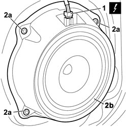

5570T93 REAR SIDE LOUDSPEAKER. (ONE), LEFT OR RIGHT - R.R. WITH REAR DOOR PANEL OR WING. REMOVED
- Path
- Procedures > 55 ELECTRICAL EQUIPMENT > 5570 ACCESSORIES > 5570T CAR RADIO AND CAR TELEPHONE > 5570T93 REAR SIDE LOUDSPEAKER. (ONE), LEFT OR RIGHT - R.R. WITH REAR DOOR PANEL OR WING. REMOVED
- Kind
- repair procedure (removal / refitting; the operation number is the code)
- Applies to
- all engines; all production periods
- Interactive page
- https://sloeber94.github.io/elrnDB-fCrm/en/#/194000790
Applies to: all engines; all production periods
 Removing
Removing
 Refitting
Refitting1. Disconnect the electrical connection.
Description | Connector | |
|---|---|---|
1 | SPEAKER IN LEFT REAR DOOR |
Description | Connector | |
|---|---|---|
1 | SPEAKER IN RIGHT REAR DOOR |
2. Use a helical bit and electric drill to remove rivets (2a) and remove the front side speaker (2b).

Applies to: all engines; all production periods
Refitting
Removing- Use a vacuum cleaner to remove the drilling swarf from the door box section structure.
- Check that the speaker is not damaged.
- Position the speaker and secure it using the rivets.
- Connect the electrical connection.
Description | Connector | |
|---|---|---|
SPEAKER IN LEFT REAR DOOR |
Description | Connector | |
|---|---|---|
SPEAKER IN RIGHT REAR DOOR |